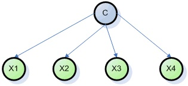
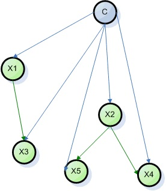

Основные алгоритмы и методы интеллектуального анализа данных
1. Обзор существующих методов
К методам и алгоритмам Data Mining относятся:
искусственные нейронные сети
деревья решений, символьные правила
методы ближайшего соседа и k-ближайшего соседа
метод опорных векторов
байесовские сети
линейная регрессия
корреляционно-регрессионный анализ
иерархические методы кластерного анализа
неиерархические методы кластерного анализа, в том числе алгоритмы k-средних и k-медианы
методы поиска ассоциативных правил, в том числе алгоритм Apriori
метод ограниченного перебора
эволюционное программирование и генетические алгоритмы
разнообразные методы визуализации данных и множество других методов.
Большинство аналитических методов, используемые в технологии Data Mining – это известные математические алгоритмы и методы. Новым в их применении является возможность их использования при решении тех или иных конкретных проблем, обусловленная появившимися возможностями технических и программных средств. Следует отметить, что большинство методов Data Mining были разработаны в рамках теории искусственного интеллекта.
Метод представляет собой норму или правило, определенный путь, способ, прием решений задачи теоретического, практического, познавательного, управленческого характера.
2. Свойства методов Data Mining
Различные методы Data Mining характеризуются определенными свойствами, которые могут быть определяющими при выборе метода анализа данных. Методы можно сравнивать между собой, оценивая характеристики их свойств.
Основные свойства и характеристики методов Data Mining: точность, масштабируемость, интерпретируемость, проверяемость, трудоемкость, гибкость, быстрота и популярность.
Масштабируемость – свойство вычислительной системы, которое обеспечивает предсказуемый рост системных характеристик, например, быстроты реакции, общей производительности и пр., при добавлении к ней вычислительных ресурсов.
3. Классификация методов
3.1. Работа с данными
Все методы Data Mining можно разделить на две большие группы по принципу работы с исходными обучающими данными. В этой классификации верхний уровень определяется на основании того, сохраняются ли данные после Data Mining либо они дистиллируются для последующего использования.
Непосредственное использование данных, или сохранение данных.
В этом случае исходные данные хранятся в явном детализированном виде и непосредственно используются на стадиях прогностического моделирования и/или анализа исключений. Проблема этой группы методов – при их использовании могут возникнуть сложности анализа сверхбольших баз данных.
Выявление и использование формализованных закономерностей, или дистилляция шаблонов
При технологии дистилляции шаблонов один образец (шаблон) информации извлекается
из исходных данных и преобразуется в некие формальные конструкции, вид которых зависит от
используемого метода Data Mining. Этот процесс выполняется на стадии свободного поиска, у
первой же группы методов данная стадия в принципе отсутствует. На стадиях прогностического
моделирования и анализа исключений используются результаты стадии свободного поиска, они
значительно компактнее самих баз данных. Конструкции этих моделей могут быть трактуемыми
аналитиком либо не трактуемыми (“черными ящиками”).
Логические методы, или методы логической индукции, включают: нечеткие запросы и анализы; символьные правила; деревья решений; генетические алгоритмы.
Методы этой группы являются, пожалуй, наиболее интерпретируемыми – они оформляют найденные закономерности, в большинстве случаев, в достаточно прозрачном виде с точки зрения пользователя. Полученные правила могут включать непрерывные и дискретные переменные. Следует заметить, что деревья решений могут быть легко преобразованы в наборы символьных правил путем генерации одного правила по пути от корня дерева до его терминальной вершины. Деревья решений и правила фактически являются разными способами решения одной задачи и отличаются лишь по своим возможностям. Кроме того, реализация правил осуществляется более медленными алгоритмами, чем индукция деревьев решений.
Методы кросс-табуляции: агенты, байесовские (доверительные) сети, кросс-табличная визуализация.
Последний метод не совсем отвечает одному из свойств Data Mining – самостоятельному поиску закономерностей аналитической системой. Однако предоставление информации в виде кросс-таблиц обеспечивает реализацию основной задачи Data Mining – поиск шаблонов, поэтому этот метод можно также считать одним из методов Data Mining.
Методы на основе уравнений
Методы этой группы выражают выявленные закономерности в виде математических выражений – уравнений. Следовательно, они могут работать лишь с численными переменными, и переменные других типов должны быть закодированы соответствующим образом. Это несколько ограничивает применение методов данной группы, тем не менее, они широко используются при решении различных задач, особенно задач прогнозирования. Данная классификация разделяет все многообразие методов Data Mining на две группы: статистические и кибернетические методы.
3.2. Подход к обучению математических моделей
Следует отметить, что существует два подхода отнесения статистических методов к Data Mining. Первый из них противопоставляет статистические методы и Data Mining, его сторонники считают классические статистические методы отдельным направлением анализа данных. Согласно второму подходу, статистические методы анализа являются частью математического инструментария Data Mining. Большинство авторитетных источников придерживается второго подхода.
В этой классификации различают две группы методов:
1. статистические методы, основанные на использовании усредненного накопленного опыта, который отражен в ретроспективных данных
2. кибернетические методы, включающие множество разнородных математических подходов
Недостаток такой классификации: и статистические, и кибернетические алгоритмы тем или иным образом опираются на сопоставление статистического опыта с результатами мониторинга текущей ситуации. Преимуществом такой классификации является ее удобство для интерпретации – она используется при описании математических средств современного подхода к извлечению знаний из массивов исходных наблюдений (оперативных и ретроспективных), т.е. в задачах Data Mining.
Статистические методы Data Mining
В эти методы представляют собой четыре взаимосвязанных раздела:
предварительный анализ природы статистических данных (проверка гипотез стационарности, нормальности, независимости, однородности, оценка вида функции распределения, ее параметров и т.п.);
выявление связей и закономерностей (линейный и нелинейный регрессионный анализ, корреляционный анализ и др.);
многомерный статистический анализ (линейный и нелинейный дискриминантный анализ, кластерный анализ, компонентный анализ, факторный анализ и др.);
динамические модели и прогноз на основе временных рядов.
Арсенал статистических методов Data Mining классифицирован на четыре группы методов:
Кибернетические методы Data Mining
Второе направление Data Mining – это множество подходов, объединенных идеей компьютерной математики и использования теории искусственного интеллекта.
3.3 Классификация по задачам
Методы Data Mining также можно классифицировать по задачам Data Mining. В соответствии с такой классификацией выделяем две группы. Первая из них – это подразделение методов Data Mining на решающие задачи сегментации (т.е. задачи классификации и кластеризации) и задачи прогнозирования. В соответствии со второй классификацией по задачам методы Data Mining могут быть направлены на получение описательных и прогнозирующих результатов.
Описательные методы
Описательные методы служат для нахождения шаблонов или образцов, описывающих данные, которые поддаются интерпретации с точки зрения аналитика.
Прогнозирующие методы
Прогнозирующие методы используют значения одних переменных для предсказания/прогнозирования неизвестных (пропущенных) или будущих значений других (целевых) переменных.
4. Задача классификации, алгоритмы реализации
Задача классификации – одна из наиболее распространенных задач в анализе данных и распознавании образов. Для решения этой задачи требуется создание классифицирующей функции, которая присваивает каждому набору входных атрибутов значение метки одного из классов. Классификация входных значений производится после прохождения этапа «обучения», в процессе которого на вход обучающего алгоритма подаются входные данные с уже приписанными им значениями классов.
На сегодняшний день разработано большое число подходов к решению задач классификации, использующие такие алгоритмы как:
деревья решений;
нейронные сети;
логистическая регрессия;
метод опорных векторов;
дискриминантный анализ;
ассоциативные правила.
Одним из эффективных алгоритмов классификации является так называемый «наивный» (упрощенный) алгоритм Байеса. Точность классификации, осуществляемой «наивным» алгоритмом Байеса, сравнима с точностью всех приведенных выше алгоритмов. С точки зрения быстроты обучения, стабильности на различных данных и простоты реализации, «наивный» алгоритм Байеса превосходит практически все известные эффективные алгоритмы классификации.
Обучение алгоритма производится путем определения относительных частот значений всех атрибутов входных данных при фиксированных значениях атрибутов класса. Классификация осуществляется путем применения правила Байеса для вычисления условной вероятности каждого класса для вектора входных атрибутов. Входной вектор приписывается классу, условная вероятность которого при данном значении входных атрибутов максимальна. «Наивность» алгоритма заключается в предположении, что входные атрибуты условно (для каждого значения класса) независимы друг от друга, т.е. для всех атрибутов Xi, Xj и значений класса C. Это предположение является очень сильным, и, во многих случаях неправомерным, что делает факт эффективности классификации при помощи «наивного» алгоритма Байес довольно неожиданным.
В этой связи закономерен поиск таких модификаций в алгоритме, которые ослабили бы предпосылку об условной независимости атрибутов. Модификацией алгоритма, решающей эти проблемы, могут служить так называемые байесовские сети. Байесовской сетью называется направленный граф без циклов, позволяющий представлять совместное распределение случайных переменных. Каждый узел графа представляет случайную переменную, а дуги – прямые зависимости между ними. Более точно, сеть описывает следующие высказывание: каждая переменная зависит только от непосредственных родителей. Таким образом, граф описывает ограничения на зависимость переменных друг от друга, что уменьшает количество параметров совместного распределения. Параметры совместного распределения кодируются в наборе таблиц для каждой переменной в форме условных распределений при условии на значения переменных-родителей. Структура графа и условные распределения узлов при значениях их родителей однозначно описывают совместное распределение всех переменных, что позволяет решать задачу классификации как определение значения переменной класса, максимизирующее ее условную вероятность при заданных значениях входных переменных.
Байесовская сеть
Очевидно, что «наивный» алгоритм Байеса является частным случаем байесовской сети, где каждая входная переменная зависит только от переменной класса, которая является единственным корнем графа.

«Наивный» алгоритм Байеса
Обучение байесовских сетей стало одним из актуальных направлением вычислительной математики и до сих пор является предметов активных исследований. Однако, до сих пор определение структуры байесовской сети в общем виде является сложной задачей как с теоретической, так и с вычислительной точки зрения. Подход в общем виде обладает следующими недостатками:
Вычислительная сложность.
При попытке учесть большое количество зависимостей между переменными, оценки условных вероятностей приобретают большую дисперсию, так как их совместное появление в данных является маловероятным событием. Таким образом, оценки параметров могут стать недостоверными, что в итоге может приводить к ухудшению качества классификации даже по сравнению с «наивным» алгоритмом Байеса.
Из-за большого количества параметров, модель получается слишком ориентированной на обучающие данные. Это приводит к очень хорошим результатам классификации на обучающих данных и неудовлетворительным результатам на тестовых данных. Т.е. модель описывает не общие закономерности в структуре данных, а скорее набор частных случаев в обучающей выборке.
Для решения этих проблем мы будем использовать ограничение на структуру графа и рассматривать такое расширение «наивной» модели Байеса, где каждый узел дополнительно может иметь не более одного родителя среди других входных переменных.

Модифицированный древовидный алгоритм Байеса
Видео материалы